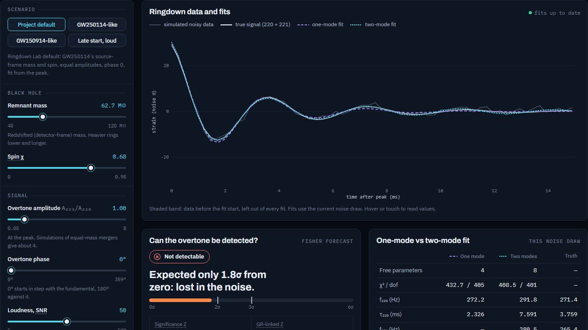
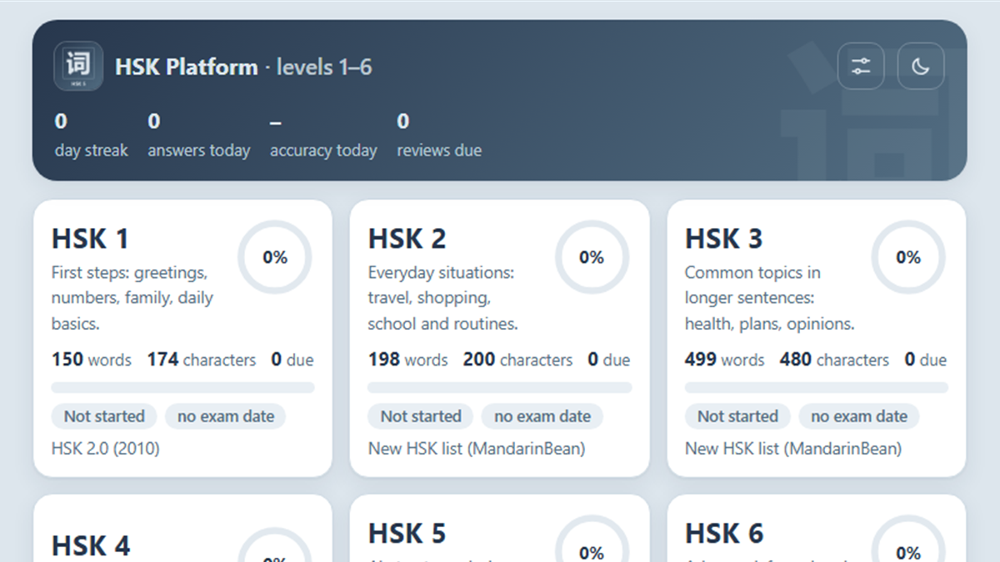
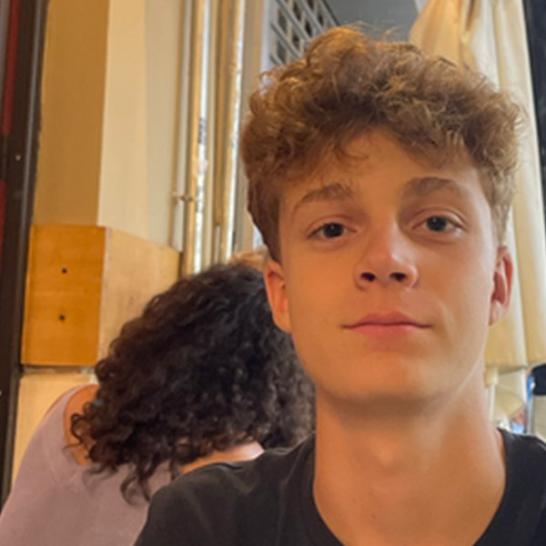

Expected graduation June 2028 Ongoing
Convitto Nazionale Vittorio Emanuele II
Rome. International Scientific High School, Chinese-language option.
- 12/12 credits earned in my third year
- 10/10 with honours (10 e lode) in the middle-school final exam
Student, Rome and Shanghai. TKS Innovator 2026–27.
“What I cannot create, I do not understand.”
Expected graduation June 2028 Ongoing
Rome. International Scientific High School, Chinese-language option.
Sep 2026 – Jan 2027 Ongoing
Shanghai. Part of my high-school education: an international academic environment, and further developing my Chinese.
2026–27 Ongoing
Selected participant. Emerging technologies, innovation and project development.
Summer 2026
Global Summer School, Physics.
Summer 2025
Immerse Education, Mathematics.
Three things I made. Each one below is an object: tilt it, drag it sideways, or flip it over.

Interactive tool, 2026. Built alone.
Fit one- and two-mode models to simulated noisy ringdowns, and see when a black hole’s overtone becomes detectable and what ignoring it does to the fit.
Open the toolArticle, 4 Oct 2026. 12 min read.
How four kinds of noise limit what we can learn from a ringing black hole, and why the next detectors are heading to space.
Read the article
Web app, 2026. Built alone.
I couldn’t find a Chinese-learning app that suited how I study, so I built one: HSK 1–6, spaced repetition, mock exams and an exam-date planner.
Open the appI’m Leonardo, a student from Rome, spending a semester in Shanghai. I learn physics and maths by building things that test them: a black-hole ringdown simulator, an article on detector noise, a Chinese-learning app. I learn by doing, and I finish what I start.

finished ongoing
Sep 2026 – Jan 2027 Ongoing
School in another country and another system, while keeping my own projects going.
Sep 2026 – now Ongoing
A ten-month innovation programme. I wrote the article and built Overtone Explorer here; now on my Focus Project.
Jul 2026
Pendulum research in a team of eight. Our product, Tempy, reached the Enterprise Challenge final. I won the talent show.
Oscillations, experiments and Python simulations. Our three experiments tested whether mass affects a pendulum’s period, measured g two independent ways, and found the damping coefficient from video analysis. Tempy is an intelligent thermal necklace.
2022 – Jun 2026
Jun 2026 and Aug–Sep 2025
2025–26 school year
Jul 2025
Two weeks of university-style maths. My project was on fluid dynamics.
“A rare combination of speed and insight.” Immerse tutor, University of Oxford
Logic, proof and group theory in the first week; dynamics, chaos and Hamiltonian mechanics in the second.
2024 – Feb 2025
1st in my school at the Giochi di Archimede, qualifying for the Rome district round (Gara di Febbraio).
Jul 2024
2019 – 2024
More than 20 races at regional level.
I’m always happy to talk about physics, maths, projects or programmes. Email is the fastest way to reach me.